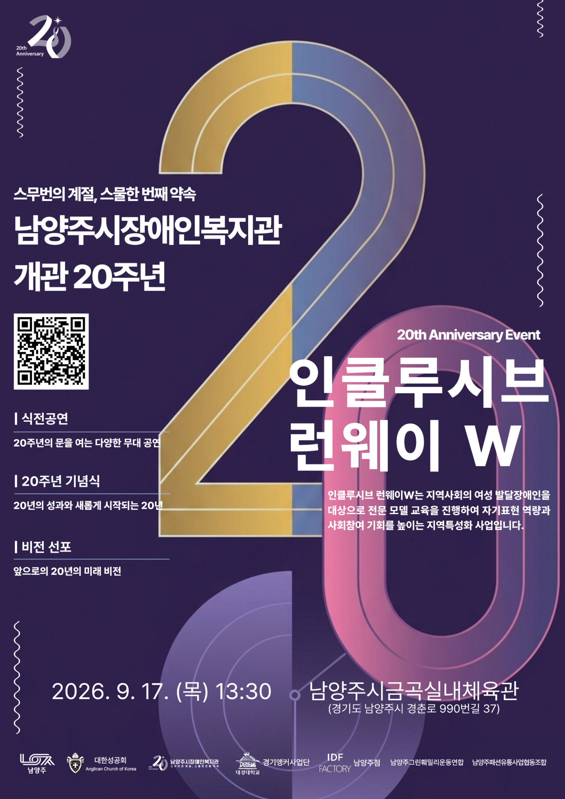

화면을 터치해 주세요
20TH ANNIVERSARY INVITATION
남양주시장애인복지관
개관 20주년 기념행사
20주년 인트로 영상을 터치하면 행사 안내와 참가 신청을 확인할 수 있습니다.
☝
초대장 · 참가신청
여기를 터치해 주세요
→
← 처음 화면으로
20주년 모바일 초대장 · 참가신청
화면을 조작하면 대기시간이 다시 1분으로 연장됩니다.
자동 초기화
60
초
잠시 후 처음 화면으로 돌아갑니다.
계속 이용하시려면 화면을 터치해 주세요.